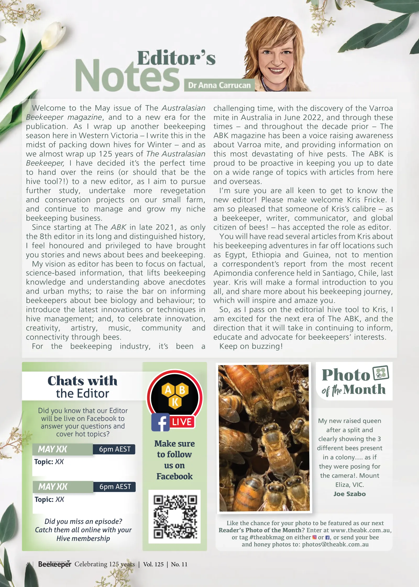

Like the chance for your photo to be featured as our next
Reader’s Photo of the Month? Enter at www.theabk.com.au,
or tag #theabkmag on either or , or send your bee
and honey photos to: photos@theabk.com.au
Welcome to the May issue of The Australasian
Beekeeper magazine, and to a new era for the
publication. As I wrap up another beekeeping
season here in Western Victoria – I write this in the
midst of packing down hives for Winter – and as
we almost wrap up 125 years of The Australasian
Beekeeper, I have decided it’s the perfect time
to hand over the reins (or should that be the
hive tool?!) to a new editor, as I aim to pursue
further study, undertake more revegetation
and conservation projects on our small farm,
and continue to manage and grow my niche
beekeeping business.
Since starting at The ABK in late 2021, as only
the 8th editor in its long and distinguished history,
I feel honoured and privileged to have brought
you stories and news about bees and beekeeping.
My vision as editor has been to focus on factual,
science-based information, that lifts beekeeping
knowledge and understanding above anecdotes
and urban myths; to raise the bar on informing
beekeepers about bee biology and behaviour; to
introduce the latest innovations or techniques in
hive management; and, to celebrate innovation,
creativity,
artistry,
music,
community
and
connectivity through bees.
For the beekeeping industry, it’s been a
challenging time, with the discovery of the Varroa
mite in Australia in June 2022, and through these
times – and throughout the decade prior – The
ABK magazine has been a voice raising awareness
about Varroa mite, and providing information on
this most devastating of hive pests. The ABK is
proud to be proactive in keeping you up to date
on a wide range of topics with articles from here
and overseas.
I’m sure you are all keen to get to know the
new editor! Please make welcome Kris Fricke. I
am so pleased that someone of Kris’s calibre – as
a beekeeper, writer, communicator, and global
citizen of bees! – has accepted the role as editor.
You will have read several articles from Kris about
his beekeeping adventures in far off locations such
as Egypt, Ethiopia and Guinea, not to mention
a correspondent’s report from the most recent
Apimondia conference held in Santiago, Chile, last
year. Kris will make a formal introduction to you
all, and share more about his beekeeping journey,
which will inspire and amaze you.
So, as I pass on the editorial hive tool to Kris, I
am excited for the next era of The ABK, and the
direction that it will take in continuing to inform,
educate and advocate for beekeepers’ interests.
Keep on buzzing!
My new raised queen
after a split and
clearly showing the 3
different bees present
in a colony…. as if
they were posing for
the camera!. Mount
Eliza, VIC.
Joe Szabo
Did you know that our Editor
will be live on Facebook to
answer your questions and
cover hot topics?
Chats with
the Editor
Make sure
to follow
us on
6pm AEST
MAY XX
Topic: XX
6pm AEST
MAY XX
Topic: XX
Did you miss an episode?
Catch them all online with your
Hive membership
4 |
Celebrating 125 years | Vol. 125 | No. 11